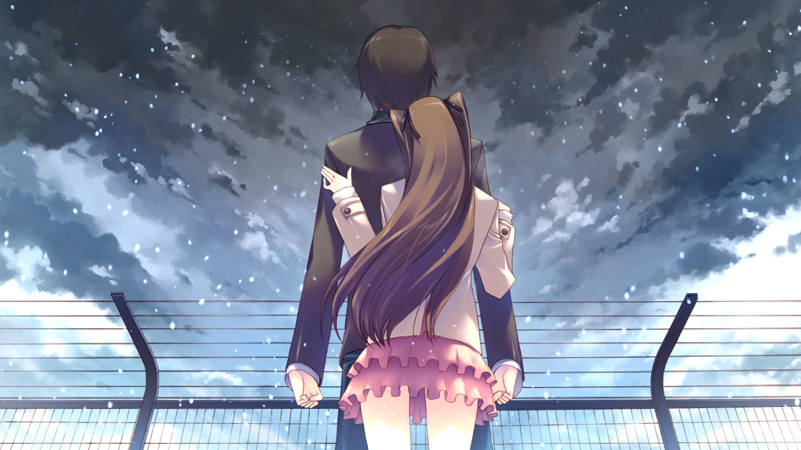
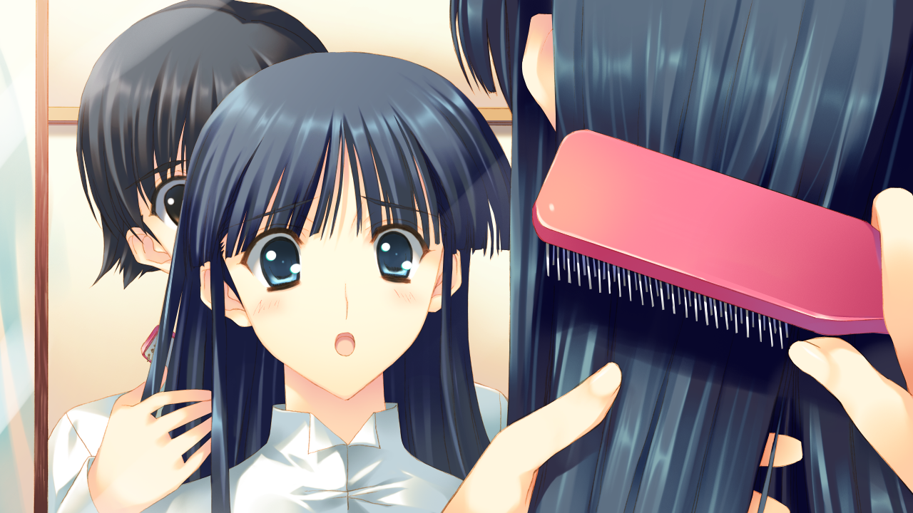
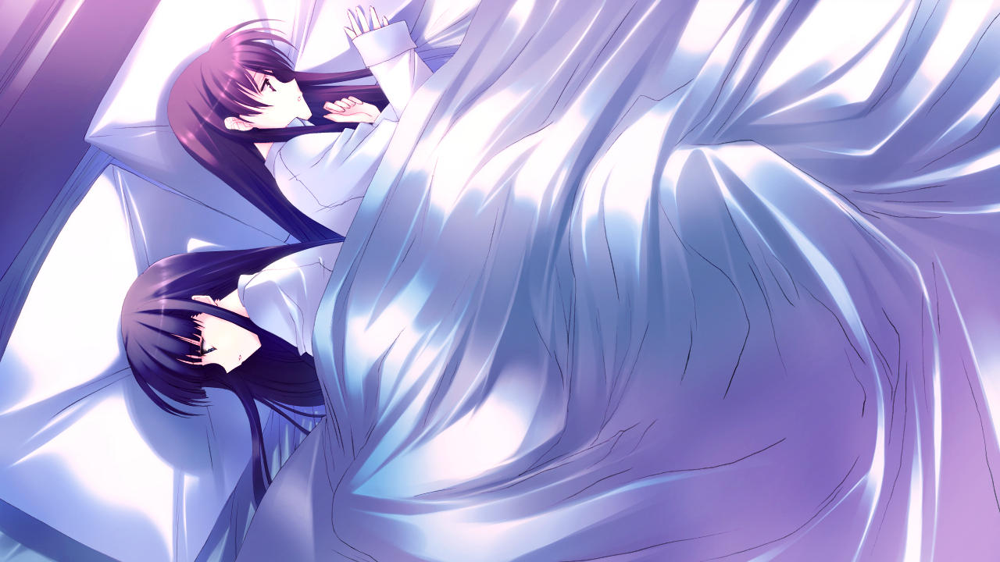

白色相簿2的故事跨越多年，从高中时代到成年后的情感纠葛，展现了主角们复杂的情感变化
峰城大附属学园三年级学生北原春希为了学园祭演出，邀请校园偶像小木曾雪菜和钢琴天才冬马和纱组建轻音乐同好会。三人开始了紧张的乐队练习。
在共同创作音乐的过程中，春希逐渐被冬马的音乐才华吸引，而雪菜则对春希产生好感。三人之间形成了微妙的情感三角关系。
春希作为执行委员长，以惊人的毅力同时处理学园祭工作和乐队排练。冬马最初对加入乐队持抗拒态度，但在春希的坚持下逐渐敞开心扉。雪菜则成为连接三人的纽带，用她温暖的笑容维系着这个脆弱的团体。
学园祭上，乐队成功演出《白色相簿》等歌曲，获得巨大成功。演出结束后，雪菜在庆功宴前向春希告白，两人开始交往。
冬马目睹了雪菜的告白，内心痛苦但仍强颜欢笑。三人的关系开始出现裂痕，冬马刻意与春希保持距离，而雪菜则努力维持三人的友谊。
学园祭演出成为峰城大附属的传奇，雪菜的歌声感动了所有人。但后台的冬马独自弹奏着《无法传达的爱恋》，表达着无法说出口的感情。雪菜察觉到冬马的感情，却选择先一步告白，这个决定成为三人关系转折的关键点。
平安夜，春希与冬马在音乐教室发生关系，被雪菜发现。雪菜深受打击但仍选择原谅春希，希望三人能回到从前。
冬马无法面对自己的感情和背叛朋友的愧疚，决定随母亲前往维也纳学习钢琴。在机场，春希终于意识到自己对冬马的感情，但为时已晚。
平安夜事件成为三人关系的分水岭。雪菜在雪中等待春希数小时，却目睹了最不愿看到的场景。冬马在机场的最后一刻，听到春希呼喊她的名字，却选择头也不回地离开。春希在雪地里崩溃大哭，雪菜默默撑伞守在他身旁，这个画面成为白色相簿2最经典的场景之一。

冬马离开后，春希和雪菜继续交往，但关系变得复杂而脆弱。雪菜一直无法忘记春希的背叛，而春希则深陷自责和愧疚。
两人考入同一所大学，表面上维持着情侣关系，但内心都承受着巨大的痛苦。雪菜努力修复关系，而春希则通过工作和学习逃避情感问题。
这五年间，雪菜始终陪伴在春希身边，包容他的冷漠与逃避。春希则拼命工作，试图用忙碌麻痹自己。两人都小心翼翼地避开关于冬马的话题，但那个缺席的身影始终横亘在他们之间。冬马在维也纳成为备受瞩目的钢琴家，但她的音乐中总是带着挥之不去的孤独感。
春希作为公司代表前往斯特拉斯堡出差，意外与已成为国际知名钢琴家的冬马重逢。两人压抑多年的感情重新燃起。
冬马的母亲曜子病重，希望冬马能在日本举办告别演奏会。春希协助冬马筹备演奏会，两人在朝夕相处中旧情复燃。
斯特拉斯堡的相遇让两人尘封的感情复苏。春希看到冬马演奏时流下的眼泪，明白她从未忘记过去。在筹备演奏会的过程中，两人重新找回了五年前的感觉，但同时也面临着对雪菜的背叛。冬马努力克制自己的感情，而春希则在两个深爱的女人之间痛苦挣扎。

雪菜察觉春希与冬马的旧情复燃，但选择默默等待春希的决定。春希陷入两难境地：一边是五年来一直陪伴自己的雪菜，一边是始终深爱的冬马。
在冬马的告别演奏会上，春希面临最终选择。根据玩家的选择，故事将走向雪菜结局或冬马结局，决定三人最终的命运
